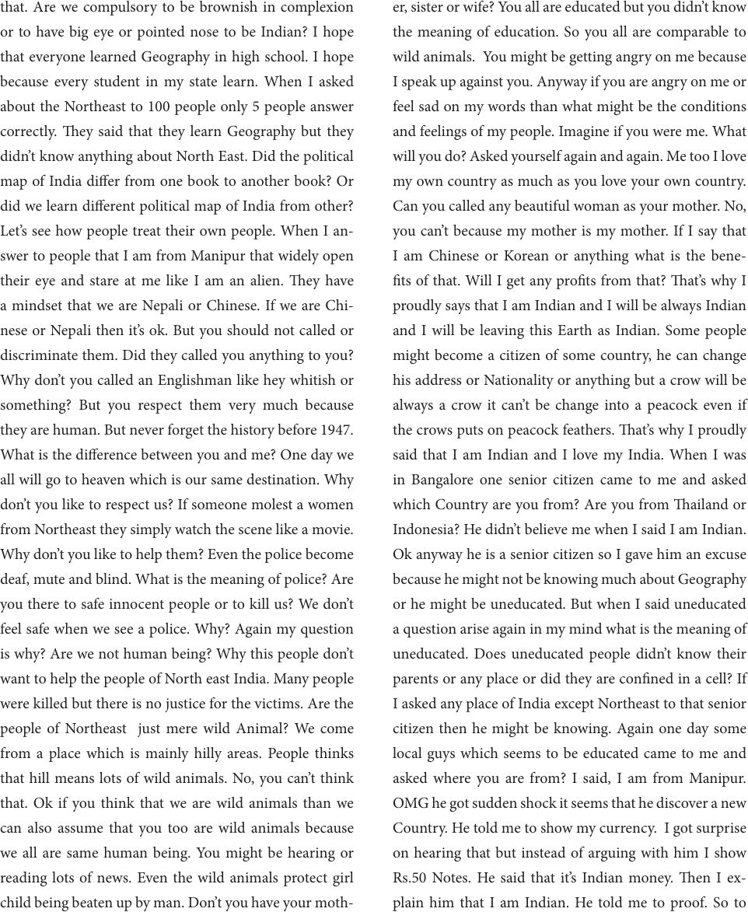

that. Are we compulsory to be brownish in complexion
or to have big eye or pointed nose to be Indian? I hope
that everyone learned Geography in high school. I hope
because every student in my state learn. When I asked
about the Northeast to 100 people only 5 people answer
correctly. ey said that they learn Geography but they
didn’t know anything about North East. Did the political
map of India dier from one book to another book? Or
did we learn dierent political map of India from other?
Let’s see how people treat their own people. When I an-
swer to people that I am from Manipur that widely open
their eye and stare at me like I am an alien. ey have
a mindset that we are Nepali or Chinese. If we are Chi-
nese or Nepali then it’s ok. But you should not called or
discriminate them. Did they called you anything to you?
Why don’t you called an Englishman like hey whitish or
something? But you respect them very much because
they are human. But never forget the history before 1947.
What is the dierence between you and me? One day we
all will go to heaven which is our same destination. Why
don’t you like to respect us? If someone molest a women
from Northeast they simply watch the scene like a movie.
Why don’t you like to help them? Even the police become
deaf, mute and blind. What is the meaning of police? Are
you there to safe innocent people or to kill us? We don’t
feel safe when we see a police. Why? Again my question
is why? Are we not human being? Why this people don’t
want to help the people of North east India. Many people
were killed but there is no justice for the victims. Are the
people of Northeast just mere wild Animal? We come
from a place which is mainly hilly areas. People thinks
that hill means lots of wild animals. No, you can’t think
that. Ok if you think that we are wild animals than we
can also assume that you too are wild animals because
we all are same human being. You might be hearing or
reading lots of news. Even the wild animals protect girl
child being beaten up by man. Don’t you have your moth-
er, sister or wife? You all are educated but you didn’t know
the meaning of education. So you all are comparable to
wild animals. You might be getting angry on me because
I speak up against you. Anyway if you are angry on me or
feel sad on my words than what might be the conditions
and feelings of my people. Imagine if you were me. What
will you do? Asked yourself again and again. Me too I love
my own country as much as you love your own country.
Can you called any beautiful woman as your mother. No,
you can’t because my mother is my mother. If I say that
I am Chinese or Korean or anything what is the bene-
ts of that. Will I get any prots from that? at’s why I
proudly says that I am Indian and I will be always Indian
and I will be leaving this Earth as Indian. Some people
might become a citizen of some country, he can change
his address or Nationality or anything but a crow will be
always a crow it can’t be change into a peacock even if
the crows puts on peacock feathers. at’s why I proudly
said that I am Indian and I love my India. When I was
in Bangalore one senior citizen came to me and asked
which Country are you from? Are you from ailand or
Indonesia? He didn’t believe me when I said I am Indian.
Ok anyway he is a senior citizen so I gave him an excuse
because he might not be knowing much about Geography
or he might be uneducated. But when I said uneducated
a question arise again in my mind what is the meaning of
uneducated. Does uneducated people didn’t know their
parents or any place or did they are conned in a cell? If
I asked any place of India except Northeast to that senior
citizen then he might be knowing. Again one day some
local guys which seems to be educated came to me and
asked where you are from? I said, I am from Manipur.
OMG he got sudden shock it seems that he discover a new
Country. He told me to show my currency. I got surprise
on hearing that but instead of arguing with him I show
Rs.50 Notes. He said that it’s Indian money. en I ex-
plain him that I am Indian. He told me to proof. So to